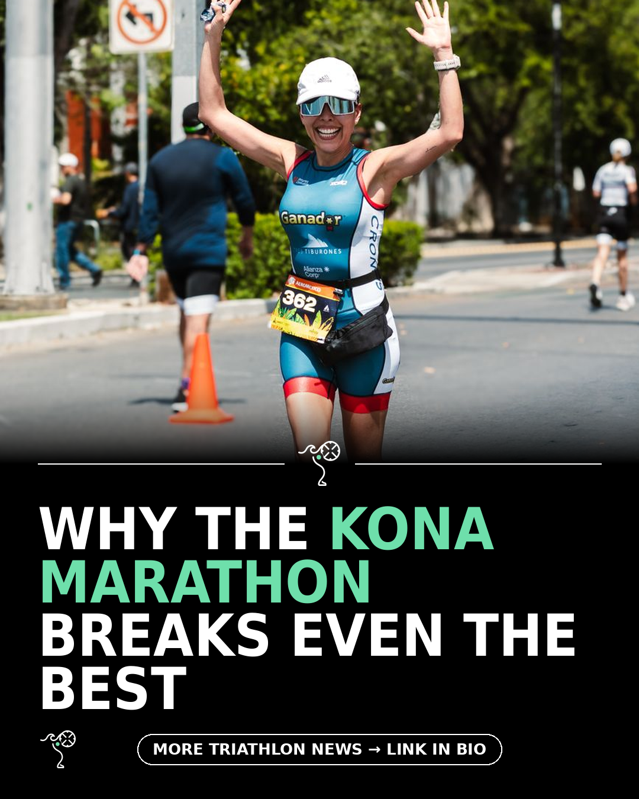

Triathlon News Daily
Thursday, 15 October 2026 · generated automatically

Today's stories
- Why the Kona marathon makes or breaks every athlete220 Triathlon
- A panic attack 200m in sparked a new dryland swim trainer220 Triathlon
- Suunto Race 3S lands with a smaller case and a bigger priceDC Rainmaker
- The Diagnosis: an Ironman finisher's story takes a hard turnMarathons & Motivation
- 28 free coach-built triathlon training plans, sprint to Ironman220 Triathlon